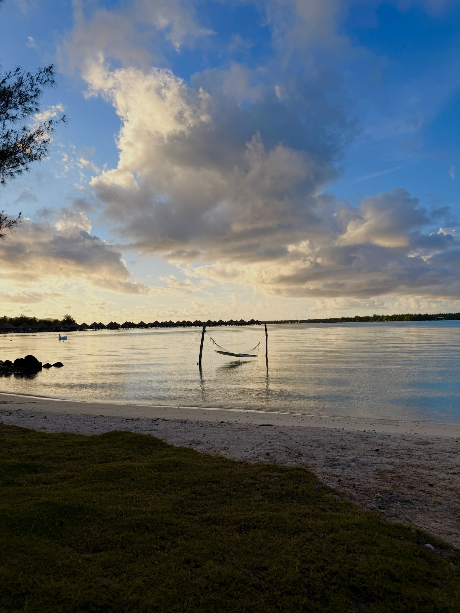
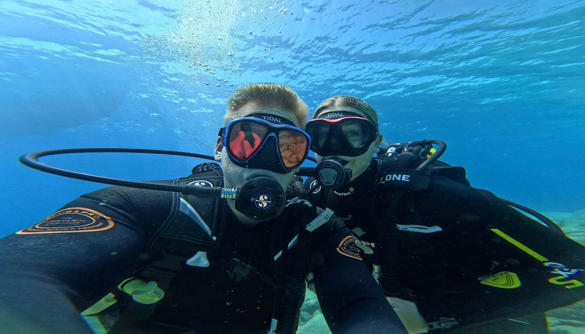

There is nothing quite like stepping off a plane into a place where everything, from the language to the food to the streets, feels brand new. Travel pushes me out of my comfort zone, teaches me about other cultures, and reminds me how big and beautiful the world really is.
Every trip becomes a story I carry with me. Below are a few of the places at the top of my list, some photos, a video that captures the feeling of travel perfectly, and even some real data about global tourism.
Here are the top destinations I want to visit, ranked, along with what I most want to do at each one:
A few shots from my own travels.


This famous short film "MOVE" captures three friends traveling across 11 countries in just one minute. It's the kind of energy that makes me want to book a flight right now.
(The video plays once the site is hosted online.)
↑ Back to topTravel isn't just about the experience. The data behind global tourism is fascinating too, and the interactive dashboard below lets you explore travel trends. Try clicking and filtering it!
↑ Back to top